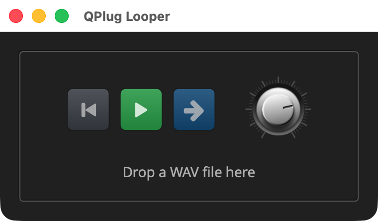

Looper: Work for the Main Thread
Overview
example/q_plug/looper is Sampler: Handing Data to the Audio Thread with a Loop switch. With
Loop on, the sample plays round and round. With Loop off, it plays once,
and when it ends, Play turns itself off.

|
Read Sampler: Handing Data to the Audio Thread first. This page builds on it and explains only what the looper adds. |
The Sampler leaves Play on when its sample ends, with nothing left to play. Turning
Play off is an edit, and edits reach the host from the main thread, so
the processor, on the audio thread, cannot make one. The Looper has its processor post the
work to the controller, which does it on the main thread. This page shows
how, with Q’s tasks under QPlug’s controller::post, and adds a
toggle with an icon for each state.
The files are the Sampler’s, with looper in place of sampler.
|
The listings below are the parts of each file that change. Each title
links to the whole file, and all of the example is in
|
Quick Start
As in Your First Plugin: Gain, with looper in place of gain. On macOS and
Linux:
Q=/path/to/q
cp -R "$Q/example/q_plug/looper" /tmp/looper
cd /tmp/looper
cmake -B build -G Ninja -DCMAKE_BUILD_TYPE=Debug -DQ_ROOT="$Q"
cmake --build buildOn Windows, in a command prompt with the MSVC environment loaded:
set Q=C:\path\to\q
xcopy /E /I "%Q%\example\q_plug\looper" "%TEMP%\looper"
cd /d "%TEMP%\looper"
cmake -B build -G Ninja -DCMAKE_BUILD_TYPE=Debug -DQ_ROOT="%Q%"
cmake --build buildThen start the standalone app:
-
macOS:
open "build/products/QPlug Looper.app" -
Linux:
"build/products/QPlug Looper" -
Windows:
"build\products\Standalone-q_plug-looper_standalone\QPlug Looper.exe"
Drop a WAV file on the box, and press Play. Let it play to the end, and Play turns itself off. Switch Loop on, and it plays round and round.
The Controller
enum { play_id, volume_id, loop_id }; (1)
...
bool playing() const;
bool looping() const;
decibel volume() const;
parameter const& volume_param() const;
// Main thread: Play off, as an edit that reaches the host.
void stop(); (2)| 1 | A third parameter, Loop. |
| 2 | stop is what the processor has done for it when the sample ends. |
inline void looper_controller::stop()
{
begin_edit(play_id); (1)
edit_parameter(play_id, false);
end_edit(play_id);
}| 1 | The same three calls a control’s binding makes when the user clicks a button: Play goes off, the host gets the edit, and the button follows. They are main-thread calls, so the processor cannot make them itself. |
parameter{ 1, "Play", false }.dont_save(),
parameter{ 2, "Volume", 0_dB }.range(silence.rep, max_volume.rep),
parameter{ 3, "Loop", false } (1)| 1 | Loop is part of how the sample plays, so unlike Play it is saved with a preset. |
The Processor
void end(); (1)
...
bool _ended = false; // until Play is off (2)| 1 | What the processor does when the sample ends, with Loop off. |
| 2 | Set at the end, and cleared once Play is off. See below. |
if (s != _last || rewind)
{
_last = s;
_pos = 0.0;
_ended = false;
}
if (!_ctl.playing()) (1)
_ended = false;
// A sample recorded at another rate is stepped through at its own.
auto play = s && s->length() != 0 && _ctl.playing() && !_ended;
auto const loop = _ctl.looping(); (2)
...
_pos += step;
if (_pos >= s->length())
{
if (loop)
{
_pos -= s->length(); (3)
}
else
{
play = false;
end(); (4)
}
}| 1 | Once Play reads off, the end has been dealt with, and the next Play starts afresh. |
| 2 | Loop is read once, at the top of the call, as Play is. |
| 3 | Looping, the position wraps to the start. |
| 4 | Playing once, the sample ends: the rest of the block is the input alone. |
// Played once, to the end: back to the top, silent, and Play off. The
// host takes edits on the main thread, so the controller makes that one
// there. Until it lands, Play still reads on, and the sample stays silent.
void looper_processor::end()
{
_pos = 0.0; (1)
_ended = true; (2)
auto ctl = &_ctl;
_ctl.post([ctl] { ctl->stop(); }); (3)
}| 1 | Back to the start, so the next Play begins from the top. |
| 2 | The task runs on the main thread a little later, a few blocks at
most, and until then Play still reads on. Without _ended, the sample
would start again from the top in the next block. |
| 3 | The task: a lambda that captures the controller’s address, so it is
trivially copyable, and posting it never allocates or locks. It runs on
the main thread, where stop is safe to call. |
A task can also be posted with a delay, measured on the audio’s own
clock: _ctl.post(2_s, f) runs f two seconds of sound from now, which
holds in an offline render too. The Looper has no use for one.
|
In depth: controller, for |
The Presenter
auto constexpr loop_color = rgba(30, 144, 255, 255); (1)
...
// Loop is a switch: a straight arrow plays once, a circle loops.
auto loop = share(toggle_icon_button( (2)
icons::right, icons::cycle, 1.5, loop_color));
bind(ctl::loop_id, loop, _ctl.parameters()[ctl::loop_id]); (3)
...
auto controls = htile(
align_middle(margin_right(10, hold(rewind))),
align_middle(margin_right(10, hold(play))),
align_middle(margin_right(30, hold(loop))),
align_middle(hold(volume))
);| 1 | A colour of its own, blue, beside Play’s green and red and Rewind’s grey. |
| 2 | A two-icon toggle like Play, with Elements' right arrow for playing
once and its cycle for looping. Given one colour, the body is drawn
dimmed in both states, and the two icons mark them. |
| 3 | Bound to Loop with the parameter as the mapping, as Play is. |
The Plugin and the Build
looper.cpp and CMakeLists.txt are the Sampler’s with the looper’s
names: QPlug Looper, the id com.qplug.looper, the AudioUnit subtype
QLpr. The editor opens at 380 by 190, wider for the third button.
Running
Inside Q, build everything as QPlug Setup and Installation describes, then run the looper’s tests:
ctest --test-dir cmake-build-debug -R looperInsert QPlug Looper on an audio track, drop a WAV file on it and press Play. With Loop off, the button returns to Play at the end, and a host that records automation records the change.
Components Used
| Component | Role |
|---|---|
|
|
The tasks under |
|
Loop, a |
|
Plays once or loops, and posts |
|
|
Loop, with an icon for each state |
Next: Anna I: The Voice